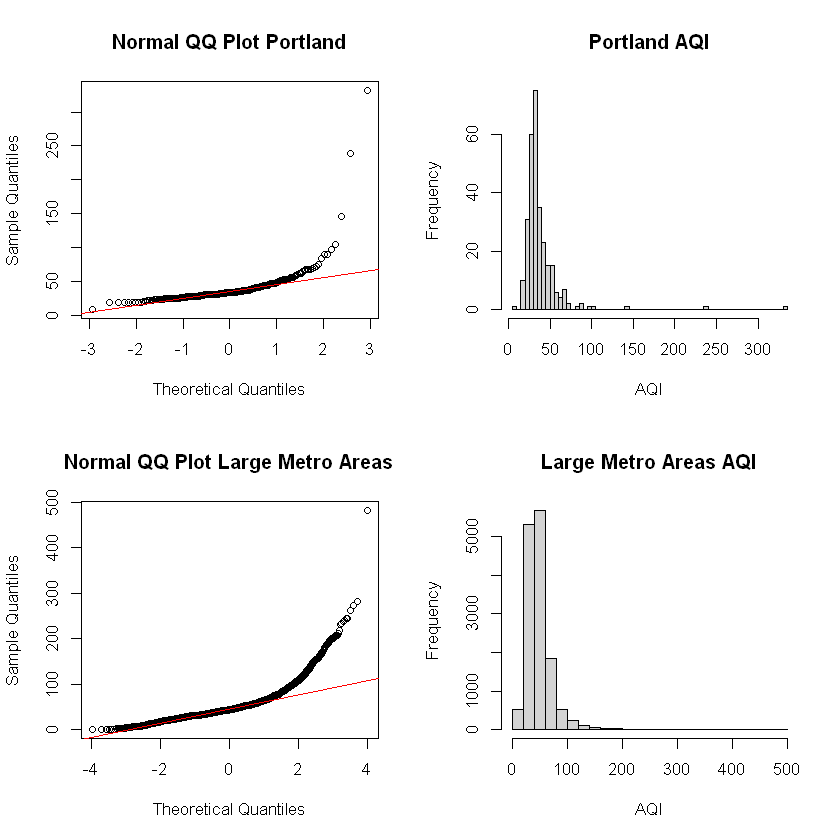
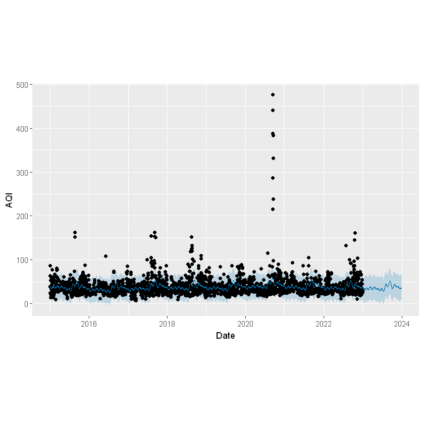
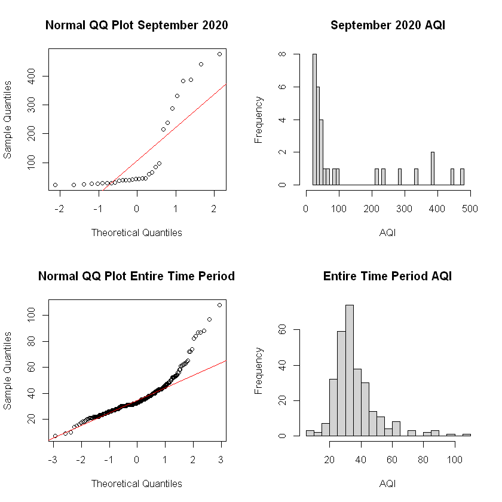
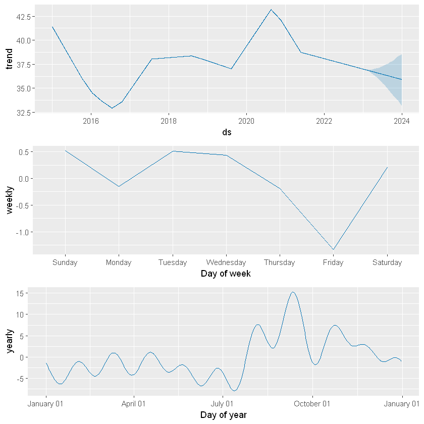
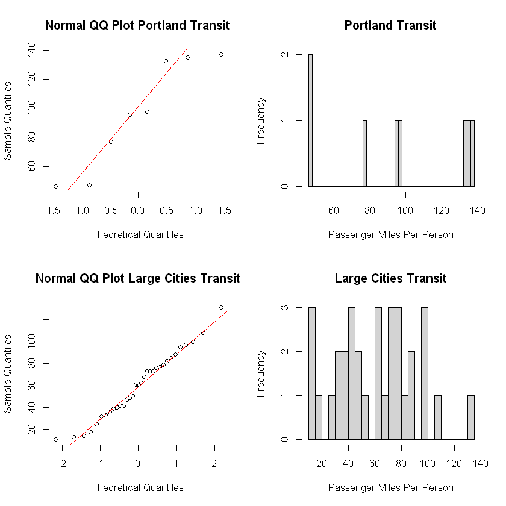

Introduction
On October 30, 1948, the Donora High School Football team played through a dense smog to complete the game with hundreds of fans in the audience, despite very poor visibility. The team, fueled by resilience, took pride in playing through poor conditions, a testament to the high spirit of the small town. Soon after, calls to the town’s medical offices began flooding in, complaining of difficulty breathing and respiratory issues. Donora, Pennsylvania, was a town of metalworks, built by the American Steel and Wire company and the Donora Zinc Works company, which made up major parts of the town’s economy. The heavy smog and pollution clouds that covered the sky had been viewed as a sign of prosperity, owing to the industrial might that powered their economy. Within just twelve hours, seventeen people would be dead, 1440 seriously affected, and 4470 with mild to moderate conditions—almost half the town’s working population (Jacobs, Burgess, Abbott).
This event, known as the Donora Smog of 1948, prompted the country into taking a closer look at the negative impacts of air pollution. Widespread debate surrounding the event led to the first legislation aimed at regulating the air quality within the United States, ushering in a new era of tracking, combatting, and reversing the ill effects of poor air quality.
The quality of air we breathe has direct impacts on our health. We must understand the factors that contribute to poor air quality and how we individually and collectively contribute to these changes. Until we can visualize the impact we have on our atmosphere, we will continue behavior that negatively impacts the air around us.
In this project, we will focus on the key factors influencing air quality in Portland, Oregon. We aim to understand the complex interplay between various environmental and human-made factors that contribute to high air pollution levels. Initially, we were surprised to discover that Portland, the city we reside in, has some of the best air quality for a city of its size in the United States. This led us to narrow our focus to understanding the factors that contribute to these favorable outcomes in this city.
Our project aims to develop and validate machine learning models to analyze the various factors influencing air quality. By focusing on Portland in comparison to other large US cities, we hope to find things Portland does that lead to the greater AQI outcomes. Our approach will consider a range of variables, including meteorological conditions, pollution sources, and transit systems. Through this analysis, we aim to provide actionable insights and recommendations for sustaining and improving air quality. By examining both the contributors to clean air and the sources of pollution, we can understand the factors affecting air quality and develop comprehensive strategies for enhancement.
Background
Federal regulation of air quality in the United States began in 1955 with the Air Pollution Control Act. This new piece of legislation provided funding for initial research into air quality and pollution in the US. Building off this and privately funded research, Congress passed the Clean Air Act of 1963, establishing the first federal regulation for controlling air pollution. This act established a new federal program within the US Public Health Service, dedicated to the monitoring and control of air quality. In 1967, Congress passed the Air Quality Act, which introduced more federal oversight and enforcement policies, allowing extensive monitoring of interstate air pollution. This all led to the passage of the 1970 Clean Air Act, aimed at restricting and regulating emissions, measuring and reducing pollutant particles, and addressing upcoming pollution threats (Environmental Protection Agency).
Also established in 1970, the Environmental Protection Agency (EPA) implemented and monitored the requirements established by these rulings. The EPA’s authority extended beyond federal lands and roads to include all companies operating within the United States. Enforcement authority was expanded to allow upholding these established standards, and prevent companies from circumventing the law. Much of the improvement in the quality of air in the US over the past fifty years can be attributed to these regulations. In 1990, when deaths due to air quality were first measured, an estimated 135,000 Americans died. By 2010, that number had dropped to 71,000 (Zhang et al.). Despite the significant improvements led by the federal guidelines of the late 70s, nearly four in ten Americans still live in places where they are exposed to unhealthy air (American Lung Association).
In 1999, the EPA developed the Air Quality Index (AQI), creating an easily understood measurement of air quality. The AQI measures air pollution levels on a scale from 0 to 500, divided into six categories. A score of 0 to 50 represents good air quality which poses little or no risk to those breathing it in, while a score above 300 signifies emergency conditions, an extremely high risk which impacts everyone. This measurement is mainly derived from five major pollutants: ozone, particulate matter (2.5μm and 10μm), carbon monoxide, nitrogen dioxide, and sulfur dioxide (Airnow.gov). Poor air quality has been linked to a variety of diseases including respiratory infections, stroke, heart disease, lung cancer, and chronic obstructive pulmonary disease, among others (World Health Organization). An estimated seven million premature deaths annually can be attributed to air pollution, which equates to a global mean loss of life expectancy of 2.9 years, making it the largest environmental risk factor for disease and premature death (Fuller, Landrigan, Balakrishnan, et. al.). Thus, it is important to understand factors that contribute to poor air quality, and outcomes that can be attributed to the state of the AQI.
These harmful factors can originate from a variety of sources. Anything that releases a foreign substance into the air can lower the quality of the air. This includes smoking, vehicle exhaust, combustion processes for production and manufacturing, household cleaning products, appliances, central air and heating systems, agriculture pesticides, livestock, shipping and transportation, and much more. Individually, we can reduce our individual contributions by lowering our reliance on personal vehicles, watching our power usage, supporting companies that monitor and address their emissions, and more. However, there are many factors beyond our control. Larger pollutant sources, such as manufacturing and transportation, are often regulated to some extent but may still release significant amounts of pollutants into the atmosphere which we as individuals have no say over (Manisalidis, Stavropoulou, Stavropoulos, Bezirtzoglou). It is challenging to restrict and watch our personal contributions to the polluting of the environment without worrying about what others are doing. Measuring and analyzing the impact these pollutants have on air quality is a crucial step towards addressing these issues.
Methods
Tools Deployed
Python will be the primary programming language used to conduct this analysis. We will also use R language in statistical applications where necessary.
To perform our analysis, we will employ NumPy and Pandas for data manipulation. Matplotlib and Seaborn for visualization, and Time Series forecasting algorithms such as Prophet and SARIMAX.
We will address data inconsistencies, missing values and ensure that data is in a tidy format.
We may need to normalize or standardize data if necessary and create new features through aggregation to enhance the model’s performance.
What is Prophet?
Prophet is an open-source forecasting tool developed by Meta, designed for forecasting time series data. It is suited for datasets with strong seasonal, monthly, weekly, or daily patterns, and it handles missing data and outliers well. We utilized prophet to gain a quick understanding of our AQI patterns, seeking to understand basic trends before conducting a more thorough analysis.
Key features of Prophet include seasonality detection and holiday incorporation, while providing easy use and understanding for users. We can use this software to get complex understanding from simple applications.
To conduct this analysis, we prepare data into a two column table, date and AQI. Prophet uses the trends of past data to highlight similarities over days of the year, weeks, months, and seasons. From this, prophet is able to generate its predictions, cross validate, and give performance metrics such as mean absolute percentage error to quantify the accuracy of the results.
What is SARIMAX algorithm?
The most common method used in time series forecasting is known as the ARIMA model. We will use an extended version called SARIMAX (Seasonal Auto Regressive Integrated Moving Averages with exogenous factor)
- The SARIMAX model is used when the data sets have seasonal cycles.
- In the dataset concerning the air quality/AQI there is a seasonal pattern which we have explained in the above section.
- SARIMAX is a model that can be fitted to time series data in order to better understand or predict future points in the time series
- SARIMAX is particularly useful for forecasting time series data that exhibits both trends and seasonality.
Here’s a breakdown of its components:
There are three distinct integers (p,d,q) that are used to parametrize SARIMAX models. Because of that, ARIMA models are denoted with the notation SARIMAX(p,d,q).
Together these three parameters account for seasonality, trend, and noise in datasets:
- Seasonality (S): Accounts for recurring patterns or cycles in the data.
- AutoRegressive (AR): Uses past values to predict future values.
- Integrated (I): Applies differencing to make the time series stationary.
- Moving Average (MA): Uses past forecast errors in the prediction.
- eXogenous factors (X): Incorporates external variables that may influence the forecast.
We are trying to find the right p, d, q hyperparameters to correctly forecast and predict the AQI values.
Metrics to Evaluate Machine Model Performance
| Technique/Metric | Description | Purpose/Formula | Scenario: Cancer prediction |
|---|---|---|---|
| 1. Train-Test Split | Split the dataset into training and testing subsets | Assess model performance on unseen data to detect overfitting and ensure generalizability | Always used; crucial for unbiased evaluation of model performance |
| 2. Cross-Validation | Divide data into k subsets and train the model k times, using a different subset as test set each time | Provides robust estimate of model performance by averaging results over multiple splits | Useful for smaller datasets or when data collection is expensive (e.g., rare cancer types) |
| 3. Confusion Matrix | Table comparing predicted and actual values in classification | Metrics: True Positives (TP), True Negatives (TN), False Positives (FP), False Negatives (FN) | Fundamental for understanding model performance in classification tasks, like cancer detection |
| 4. Accuracy | Ratio of correctly predicted instances to total instances | \(\frac{TP + TN}{TP + TN + FP + FN}\) | Used when classes are balanced; less suitable for rare cancer detection due to class imbalance |
| 5a. Precision | Ratio of correctly predicted positive observations to total predicted positives | \(\frac{TP}{TP + FP}\) | Important when false positives are costly (e.g., unnecessary biopsies or treatments) |
| 5b. Recall (Sensitivity) | Ratio of correctly predicted positive observations to all actual positive observations | \(\frac{TP}{TP + FN}\) | Critical in cancer detection to minimize false negatives (missed cancer cases) |
| 5c. F1-Score | Harmonic mean of Precision and Recall | \(2 \times \frac{\text{Precision} \times \text{Recall}}{\text{Precision} + \text{Recall}}\) | Balances precision and recall; useful when seeking a compromise between false positives and false negatives |
| 6. ROC Curve and AUC | ROC: Graph of true positive rate vs false positive rate at various thresholds. AUC: Area under ROC curve | Higher AUC indicates better model performance | Useful for comparing models and choosing optimal threshold, especially in diagnostic tests |
| 7. Mean Absolute Error (MAE) | Average of absolute differences between predicted and actual values | \(\frac{1}{n} \sum_{i=1}^{n} \|y_i - \hat{y}_i\|\) | Used in regression tasks, e.g., predicting survival time; less sensitive to outliers than MSE |
| 8a. Mean Squared Error (MSE) | Average of squared differences between predicted and actual values | \(\frac{1}{n} \sum_{i=1}^{n} (y_i - \hat{y}_i)^2\) | Used in regression; penalizes large errors more, suitable when large errors are particularly undesirable |
| 8b. Root Mean Squared Error (RMSE) | Square root of MSE | \(\sqrt{\text{MSE}}\) | Same as MSE, but in the original unit of the target variable, making it more interpretable |
| 9. R-squared | Proportion of variance in dependent variable predictable from independent variables | \(1 - \frac{\sum_{i=1}^{n} (y_i - \hat{y}_i)^2}{\sum_{i=1}^{n} (y_i - \bar{y})^2}\) | Used in regression to assess overall fit; indicates how well the model explains the variance in the data |
| 10a. Akaike Information Criterion (AIC) | Measures relative quality of statistical model for given data | \(2k - 2\ln(L)\) where \(k\) is number of parameters and \(L\) is likelihood | Used for model selection; helps prevent overfitting by penalizing complex models |
| 10b. Bayesian Information Criterion (BIC) | Similar to AIC but with stronger penalty term for number of parameters | \(k\ln(n) - 2\ln(L)\) where \(n\) is number of observations | Also used for model selection; tends to favor simpler models compared to AIC |
Machine Learning AQI Time Series
How can we use Akaike Information Criteria (AIC)?
Used to measure of a statistical model, it quantifies:
- The goodness of fit
- The simplicity of the model into a single statistic
- When comparing two models, the one with the lower AIC is generally “better”
The Akaike Information Criterion (AIC) is a measure used to compare different statistical models. It helps in model selection by balancing the goodness of fit and the complexity of the model. Here’s how to interpret the AIC value:
- Lower AIC is Better: A lower AIC value indicates a better-fitting model. It means the model has a good balance between accuracy and complexity.
- Comparative Measure: AIC is most useful when comparing multiple models. The model with the lowest AIC among a set of candidate models is generally preferred.
- Penalty for Complexity: AIC includes a penalty for the number of parameters in the model. This discourages overfitting by penalizing models that use more parameters without a corresponding improvement in fit.
Data Explaination
The data for this project was initially scattered across multiple sources and required significant organization and compilation. The focus of this project is on the air quality in Portland, Oregon, so various data sources were aggregated and processed to compare a variety of air quality indicators.
Air Quality Data:
Air quality data, specifically AQI values, were obtained from the United States Environmental Protection Agency (EPA) pre-generated data files. The AQI values are calculated daily, based on a variety of factors including criteria gasses and measured pollutant concentrations, and measures how harmful breathing the air is. AQI is classified into one of six categories from ‘good’ to ‘hazardous’, each having long term health effects associated with it. The files were given daily on a county wide basis, separated into different files by year.
Meteorological Data:
Historical weather data was also sourced from the EPA database, measured by thousands of weather stations across the country. Measurements tracked include temperature, wind speed, air pressure, and humidity. Temperature is measured in degrees fahrenheit. Wind speed is measured in knots, which are defined as one nautical mile per hour (equivalent to approximately 1.15mph). Wind speed is important in air quality as winds can blow different pollutants around and move and spread wildfires. Pressure is measured in millibars, where 1013.25 millibars is the standard atmospheric pressure (Earth’s pressure at mean sea level). Finally, humidity is measured in percent relative humidity. This is the amount of water vapor in the air as a percentage of the maximum amount of water vapor possible at a given temperature. Humidity can make it more difficult to breathe and sweat, make the air feel hotter than it is, and prevent air pollutants from dispersing as easily. Indoors, high humidity can trap air, leading to the growth of mold and harmful bacteria. This data was given daily by city, separated into different files by year. Measurements were taken hourly, but pre-calculated in the source database, giving an average value over the twenty four hours and a maximum value.
Pollution Source Data:
Pollution data was again sourced from the EPA database, separated by criteria gasses (CO, NO2, O3, SO2), Toxins (lead), and particulate matter (PM2.5 and PM10). Criteria gas Carbon Monoxide is measured in parts per million, and is especially dangerous as it is both colorless and odorless. CO binds to hemoglobin in the blood, making the transportation of oxygen around the body more difficult. Nitrogen Dioxide is dangerous to breathe in at high levels. It can cause swelling in the throat, burning, reduced oxygenation of body tissues, and fluid build up in the lungs. It is released in many common combustion reactions including in cars, coal plants, and cigarettes. It is measured in parts per billion. Ozone can harm our ability to breathe, especially in older people, children, and people with asthma. It is measured in parts per million. Sulfur Dioxide, measured in parts per billion, can irritate the eyes, mucous membranes, skin, and respiratory tract. Lead is a toxin which can increase the risk of high blood pressure, cardiovascular problems, and complications during pregnancy. While exposure has gone down significantly in the recent decades after use in gasoline, it still remains a dangerous toxin to breathe in. It is measured in micrograms per cubic meter. PM2.5 and PM10 are particulate matter, small inhalable particles with diameters of 2.5 microns or smaller, and 10 microns or smaller respectively. PM2.5 includes all sorts of common particles, metals, and organic compounds. PM10 includes dust, pollen, molds, and other larger (but still very small) particles. Due to the variability of particles included in the PM classification, there are a wide range of negative health impacts that come from breathing in these particles. PM2.5 and PM10 are measured in micrograms per cubic meter.
This data was given daily by city, separated into different files by year. They are sourced from thousands of individual sources, which measure various selections of these pollution sources. Because of the variety of different pollutants being measured, there was a significant amount of missing data, especially from small towns. Measurements were taken hourly, pre-compiled into a daily average and maximum.
Transit Data:
Information on motor buses taken from the National Transit Database, produced by the Federal Transit Administration. Includes information of bus systems and ridership by city, separated by year. Data is recorded yearly, encompassing annual totals for information such as number of buses, total revenue, passengers, and miles driven for the respective city transit systems. Information was given in yearly CSVs, separated by the city transit system. For cities with multiple systems, data was combined. Only motorbus data was used, which may not be reflective of cities with other large methods of public transportation, such as the New York subway system.
Population Data:
Data on population and population density sourced from the Simplemaps United States Cities database, which is built from multiple sources including the U.S. Geological Survey and the U.S. Census Bureau. Data is updated as of May 6, 2024, reflecting very up to date information.
Data Processing
The data was downloaded in R. For information given in yearly CSV files, data was stacked vertically to include all years in our time frame. In all tables, relevant columns were selected and renamed, reducing the information being brought into our initial SQL database. R was connected and imported to PostgreSQL using the RPostgres package, and used to read, stack, select columns, and rename columns before being written into a PostgreSQL database.
Data Organization
Given the raw data available, the table structure was simplified compared to the original data sources. Data was organized in a star schema centered on the air_quality fact table. This table tracks AQI, pollutant, weather and toxin data daily for each location. The first dimension table is the dates table, a serialized list of dates from January 1st, 2015 to December 31st, 2022. Next, we have a locations dimension table, a serialized list of over 1400 cities and towns from around the country. These are labeled by the state, county, and city name, as well as the population and population density, allowing connection to information based on what is given. The aqi_category dimension table is a short list of AQI value categories (Good, Unhealthy, Hazardous, etc.) with their respective AQI value range as minimum and maximum values.
Finally, the yearly_transit dimension table gives the information for the transit system of the respective city during the specified year attached in the fact table. This table seems counterproductive to not include the location or year of the specified line or even a reference id, but in keeping with star schema, it was decided that this was the best way to reference this information. Understanding the context of a specified line requires joining the table back to the fact table, and joining the location and date tables to that as well.
Each table has a unique serialized primary key, and all dimension tables are connected via foreign key. Several additional indexes are included on columns that will be queried often. Finally, constraints have been added to limit unusual or impossible data.
Tracking these identifiers independently allows for accurate analysis of changes over time and across different areas, and allows adding new information should we need to update the database. (Figure 1) illustrates the resulting ERD structure using drawSQL.
Figure 1.

#| label: import-package
from sqlalchemy import create_engine, text
import dotenv
import datetime
import time
import os
import matplotlib.pyplot as plt
import seaborn as sns
import numpy as np
import pandas as pd
import missingno as msno
from summarytools import dfSummary
import sweetviz as sv
from ydata_profiling import ProfileReportInitial Exploratory Data Analysis (EDA)
We have a new dataset named metro_1mil.csv. This file was created using a SQL statement that joins all relevant tables, filtering for metropolitan areas with populations less than or equal to 1 million. This approach limits our EDA to mid-sized metropolitan cities, such as Portland, Oregon.
#| label: read-data
df = pd.read_csv('https://raw.githubusercontent.com/wu-msds-capstones/Air-Quality-Index/main/data/metro_1mil.csv')Visualization AQI Distribution
Let’s plot the AQI data distribution
#| label: plot-aqi
plt.figure(figsize=(10, 6))
sns.histplot(df['aqi'], kde=True)
plt.title('Distribution of Air Quality Index')
plt.xlabel('AQI')
plt.show()Dataframe Shape
#| label: describe-shape
num_rows, num_columns = df.shapeThe DataFrame contains {python} num_rows rows and {python} num_columns columns.
Exploring Oregon State
#| label: filter-df
df = df[df['state'] == 'Oregon']
num_rows_oregon = df.shape[0]By filtering our Dataframe for Oregon state, our DataFrame contains {python} num_rows_oregon rows.
Features Engineering
#| label: convert-dt
df['date'] = pd.to_datetime(df['date'])#| label: df-drop-col
df = df.drop(['aqi_range', 'st_abbv'], axis=1)
df = df.drop(['mean_lead_micrograms_per_cubic_meter', 'max_lead_micrograms_per_cubic_meter'], axis=1)
df = df.drop(['mean_pm100_micrograms_per_cubic_meter', 'max_pm100_micrograms_per_cubic_meter'], axis=1)
df = df.drop(['mean_pm25_micrograms_per_cubic_meter', 'max_pm25_micrograms_per_cubic_meter'], axis=1)#| label: df-ampute
columns_to_impute = [
'mean_temperature_fahrenheit', 'max_temperature_fahrenheit',
'mean_pressure_millibars', 'max_pressure_millibars',
'mean_humidity_percent_relative_humidity', 'max_humidity_percent_relative_humidity',
'mean_wind_knots', 'max_wind_knots',
'mean_co_ppm', 'max_co_ppm',
'mean_no2_ppb', 'max_no2_ppb',
'mean_ozone_ppm', 'max_ozone_ppm',
'mean_so2_ppb', 'max_so2_ppb'
]
means = {col: df[col].mean() for col in columns_to_impute}
df = df.assign(**{col: df[col].fillna(means[col]) for col in columns_to_impute})Date Column Preprocessing:
- Converted the date column to DateTime objects for easier manipulation and analysis.
- Extracted additional time-based features: year, month, day of week, and quarter.
Feature Selection:
- Removed irrelevant columns to focus the analysis on pertinent variables.
- Retained features: pollutant, aqi, wind
Missing Value Treatment:
- Identified columns with missing values: most all of them
- Applied mean() imputation method for numerical columns.
- For categorical columns: n/a
Data Types and Memory Usage:
- Optimized data types to reduce memory usage (e.g., using categories for low-cardinality strings, int8/int16 for small integers).
Basic Statistics:
- Generated summary statistics for numerical columns using df.describe().
- Calculated frequency distributions for categorical variables.
Distribution Analysis:
- Plotted histograms and kernel density estimates for main numerical features.
Time Series Components:
- Decomposed time series data into trend, seasonality, and residual components for relevant variables.
Sweetviz Data Report
#| label: sweetvis-report
my_report = sv.analyze(df)
my_report.show_html()We have generated a complete statistical report confirming the quality of EDA steps.
Advanced Exploratory Data Analysis
We have also employed the ydata-profiling package, a powerful Time Series Analysis EDA package that offers more detailed analysis.
We have unlocked time series-specific features using ydata-profiling: - Set tsmode=True when creating the ProfileReport - Ensure our DataFrame is sorted or specify the sortby parameter - Time Series Feature Identification
The ydata identifies time-dependent features using autocorrelation analysis.
For recognized time series features: - Histograms are replaced with line plots - Feature details include new autocorrelation and partial autocorrelation plots - Two additional warnings may appear: NON STATIONARY and SEASONAL
Handling Multi-Entity Time Series Data, In our case, with category_id:
- Each pollutants represents a distinct time series
- For optimal analysis, we filter and profile each pollutant separately
#| label: ydata-report
#for group in df.groupby("category_id"):
# # Running 1 profile per station
# profile = ProfileReport(
# group[1],
# minimal=True,
# sortby="date",
# # title=f"Air Quality profiling - Site Num: {group[0]}"
# )
# profile.to_file(f"Ts_Profile_{group[0]}.html")#| label: ydata-render
#profile = ProfileReport(
# group[1],
# tsmode=True,
# sortby="date",
# # title=f"Air Quality profiling - Site Num: {group[0]}"
#)
#profile.to_file("your_report2.html")#| label: quarto-cross-ref pickle
#df.to_pickle('/data/df.pkl')Our exploratory data analysis (EDA) process consisted of two complementary approaches:
Manual Investigation: We conducted an in-depth, hands-on examination of the dataset.
Automated Analysis: We leveraged two powerful EDA packages:
Sweetviz: For quick, visual data summaries
ydata-profiling: For more detailed, customizable reports
These methods allowed us to thoroughly evaluate key data quality aspects, including:
- Class balance in categorical variables
- Presence and distribution of missing values (NaN)
- Feature distributions and correlations
- Potential time-series characteristics
This multi-faceted approach ensures a robust understanding of our dataset’s structure, quality, and potential challenges before proceeding with further analysis.
#| label: df-aqi
df_aqi = df[['date', 'aqi']]
df_aqi = df_aqi.set_index('date')Time Series Visualization for CO Pollutant, Wind and AQI
CO pollutant refers to carbon monoxide, which is a colorless, odorless, and tasteless gas that can be harmful to human health and the environment. Here’s some key information about CO as a pollutant:
Primarily produced by incomplete combustion of carbon-containing fuels Major sources include vehicle exhaust, industrial processes, and some natural sources like volcanoes
- Slightly less dense than air
- Highly flammable
#| label: ts-wind-co-aqi
sns.set_theme(style="darkgrid")
# Prepare wind data
df_wind = df[['date', 'mean_wind_knots', 'max_wind_knots']]
df_wind = df_wind.set_index('date')
df_wind_year = df_wind.resample('YE').mean().assign(Resample='Year')
df_wind_month = df_wind.resample('ME').mean().assign(Resample='Month')
df_wind_day = df_wind.resample('D').mean().assign(Resample='Day')
df_wind_combined = pd.concat([df_wind_year, df_wind_month, df_wind_day])
df_wind_combined.ffill(inplace=True)
df_wind_combined.reset_index(inplace=True)
# Prepare CO data
df_co = df[['date', 'mean_co_ppm', 'max_co_ppm']]
df_co = df_co.set_index('date')
df_co_year = df_co.resample('YE').mean().assign(Resample='Year')
df_co_month = df_co.resample('ME').mean().assign(Resample='Month')
df_co_day = df_co.resample('D').mean().assign(Resample='Day')
df_co_combined = pd.concat([df_co_year, df_co_month, df_co_day])
df_co_combined.ffill(inplace=True)
df_co_combined.reset_index(inplace=True)
# Prepare AQI data
df_aqi = df[['date','aqi']]
df_aqi = df_aqi.set_index('date')
df_aqi_year = df_aqi.resample('YE').mean().assign(Resample='Year')
df_aqi_month = df_aqi.resample('ME').mean().assign(Resample='Month')
df_aqi_day = df_aqi.resample('D').mean().assign(Resample='Day')
df_aqi_combined = pd.concat([df_aqi_year, df_aqi_month, df_aqi_day])
df_aqi_combined.ffill(inplace=True)
df_aqi_combined.reset_index(inplace=True)
# Merge the three DataFrames
df_combined = pd.merge(df_wind_combined, df_co_combined, on=['date', 'Resample'], suffixes=('_wind', '_co'))
df_combined = pd.merge(df_combined, df_aqi_combined, on=['date', 'Resample'])
# Melt the DataFrame for FacetGrid
df_melted = df_combined.melt(id_vars=['date', 'Resample'], value_vars=['mean_wind_knots', 'mean_co_ppm', 'aqi'],
var_name='Variable', value_name='Value')
# Set the figure size
plt.figure(figsize=(10, 18))
# Plot using seaborn
g = sns.FacetGrid(df_melted, row='Resample', col='Variable', hue='Resample', sharex=True, sharey=False, height=4, aspect=3)
g.map(sns.lineplot, 'date', 'Value')
# Adjust the plot
g.add_legend()
g.set_axis_labels('Date', 'Value')
plt.subplots_adjust(top=0.9)
g.fig.suptitle('Mean Wind Knots, CO PPM, and AQI Resampled by Year, Month, and Day')
plt.show()Time Series Visualization for SO2, NO2 and Ozone
NO2 (nitrogen dioxide) is an important air pollutant. Here’s a concise overview of it:
- Reddish-brown gas with a pungent odor - Part of a group of pollutants known as nitrogen oxides (NOx)
SO2 (sulfur dioxide) is an important air pollutant. Here’s a concise overview of SO2 as a pollutant:
- Colorless gas with a sharp, pungent odor
- Highly soluble in water
Ozone (O₃) as a pollutant is a complex topic, as it can be both beneficial and harmful depending on its location in the atmosphere. Here’s a concise overview of ozone as a ground-level pollutant:
- Colorless to pale blue gas with a distinctive smell
- Highly reactive molecule composed of three oxygen atoms
#| label: ts-so2-no2-ozone
#| warning: false
import pandas as pd
import seaborn as sns
import matplotlib.pyplot as plt
sns.set_theme(style="darkgrid")
# Filter and resample SO2 data
df_so2 = df[['date', 'mean_so2_ppb', 'max_so2_ppb']]
df_so2 = df_so2.set_index('date')
df_so2_year = df_so2.resample('YE').mean().assign(Resample='Year')
df_so2_month = df_so2.resample('ME').mean().assign(Resample='Month')
df_so2_day = df_so2.resample('D').mean().assign(Resample='Day')
df_so2_combined = pd.concat([df_so2_year, df_so2_month, df_so2_day])
df_so2_combined.ffill(inplace=True)
df_so2_combined.reset_index(inplace=True)
# Filter and resample NO2 data
df_no2 = df[['date', 'mean_no2_ppb', 'max_no2_ppb']]
df_no2 = df_no2.set_index('date')
df_no2_year = df_no2.resample('YE').mean().assign(Resample='Year')
df_no2_month = df_no2.resample('ME').mean().assign(Resample='Month')
df_no2_day = df_no2.resample('D').mean().assign(Resample='Day')
df_no2_combined = pd.concat([df_no2_year, df_no2_month, df_no2_day])
df_no2_combined.ffill(inplace=True)
df_no2_combined.reset_index(inplace=True)
# Filter and resample ozone data
df_ozone = df[['date', 'mean_ozone_ppm', 'max_ozone_ppm']]
df_ozone = df_ozone.set_index('date')
df_ozone_year = df_ozone.resample('YE').mean().assign(Resample='Year')
df_ozone_month = df_ozone.resample('ME').mean().assign(Resample='Month')
df_ozone_day = df_ozone.resample('D').mean().assign(Resample='Day')
df_ozone_combined = pd.concat([df_ozone_year, df_ozone_month, df_ozone_day])
df_ozone_combined.ffill(inplace=True)
df_ozone_combined.reset_index(inplace=True)
# Merge the three DataFrames
df_combined = pd.merge(df_so2_combined, df_no2_combined, on=['date', 'Resample'], suffixes=('_so2', '_no2'))
df_combined = pd.merge(df_combined, df_ozone_combined, on=['date', 'Resample'])
# Melt the DataFrame for FacetGrid
df_melted = df_combined.melt(id_vars=['date', 'Resample'],
value_vars=['mean_so2_ppb', 'mean_no2_ppb', 'mean_ozone_ppm'],
var_name='Variable', value_name='Value')
# Set the figure size
plt.figure(figsize=(15, 20))
# Plot using seaborn
g = sns.FacetGrid(df_melted, row='Resample', col='Variable', hue='Resample',sharex=True, sharey=False, height=6, aspect=2)
g.map(sns.lineplot, 'date', 'Value')
# Adjust the plot
g.add_legend()
#g.set_axis_labels('Date', 'Value (PPB/PPM)')
plt.subplots_adjust(top=0.9)
g.fig.suptitle('Mean SO2, NO2, and Ozone Resampled by Year, Month, and Day')
plt.show()We finally completed the exploratory data analysis.
Prophet AQI Trend Forecasting and Hypothesis Testing
To gain an understanding of how Portland’s AQI differs from other large cities, we can start by running a hypothesis test to determine the significance.
Initially we can run a two sample t-test to show that Portland’s AQI average is statistically greater than the average AQI of all large metropolitan areas within the US. We compare the sample of Portland AQI datapoints in the time period with the sample of all metropolitan areas with a population greater than one million.
Null Hypothesis: The Portland AQI is greater than or equal to the AQI of all large metro cities in the US.
Alternate Hypothesis: The Portland AQI is less than the AQI of all large metro cities in the US.
Assumptions:
Simple Random Sample: Data is a simple random sample. We have selected 10% of values from each population set.
Independence: AQI in Portland does not affect AQI in the rest of the country. However, the dataset for the large metro areas does include Portland, so Portland AQI will be repeated within both population groups. Both groups are largely independent, though this should be noted.
Normal Distribution:
From the QQ plots and histograms, we can see both datasets are clearly not normally distributed. They have long tails to the right. However, since the tails have such low frequencies and the samples are very large, this likely will not impact the results.
The partial violations of the assumptions in the t test in our analysis suggest that the conclusions should be considered with a degree of caution.
Two Sample T Test Portland AQI vs Large Metro Areas AQI
Welch Two Sample t-test
data: pdx_aqi_sample and lmaqi_sample
t = -9.997, df = 310.85, p-value < 2.2e-16
alternative hypothesis: true difference in means is less than 0
95 percent confidence interval:
-Inf -8.831337
sample estimates:
mean of x mean of y
37.86301 48.43980 Based on the low P-value of < 2.2*10^-16, we can safely reject the null hypothesis. We conclude that Portland’s AQI mean is not greater than or equal to the AQI of all large metropolitan areas. This agrees with our initial observations on the greater AQI outcomes of Portland, and specifies the significance of this statistically.
Prophet Data Forecasting
Prophet by Meta is used as time series prediction to estimate and map trends based on our data. We use this to see how AQI trends vary by day, month, and year. It is also able to give us a forecast for a given period after the end of our data which we can analyze and use to anticipate future AQI values.
Data Forecasting
To use the package, data must be in the format of a two column graph, with the first column being the date data, and the second being the variable being mapped and predicted. In this case, this predicted variable is AQI.
The package allows a future period to be generated, which can be specified and added to the end of the time data. It can then predict future AQI values for the new data period.
The graph below (figure 4324), shows the supplied data with the future prediction over the future period. The actual values are shown with the black datapoints, and the blue line represents the prediction. The upper and lower bounds of the error are represented with the transparent blue area. Each year, the data spikes during the late summer to early fall. Even more significant is the large spike in September 2020. What caused it? How significant was it?

2020 Wildfires
In September 2020, a wildfire ravaged the state of Oregon, as well as many other areas of the United States and Canada. The fires burned more than one million acres of land, destroying thousands of homes, and killing 11 people. 500,000 Oregonians were on evacuation alert, and 40,000 were actually forced to leave (Oregon Department of Emergency Management). Anyone around during that time will recall the orange skies, thick atmosphere, and strong smoke smell, but how unusual was this period actually?
To understand, we will conduct a two sample t-test to see whether or not this month had greater than usual AQI.
Null Hypothesis: September 2020 AQI less than or equal to AQI of entire period in Portland
Alternate Hypothesis: September 2020 AQI greater AQI of entire period in Portland
Assumptions:
Simple Random Sample: Data is not a simple random sample. Since there are so few datapoints for the September 2020 population (30 datapoints), taking a 10% sample may not be suitable to accurately capture the variance of this month. Thus, it was decided to use the entire population as the sample. A 10% sample will be taken of the entire Portland data population.
Independence: AQI in September 2020 does not affect AQI in the rest of the timeframe.
Normal Distribution:

From the QQ plots and histograms, we can see both datasets are clearly not normally distributed. They have long tails to the right, and the September 2020 dataset is oddly shaped due to lack of data.
The partial violations of the assumptions in the t test in our analysis suggest that the conclusions should be considered with a degree of caution.
Two Sample T Test September 2020 vs Full Period of Portland AQI
Welch Two Sample t-test
data: pdx_sep_20_aqi and pdx_data_sample
t = 3.2945, df = 29.061, p-value = 0.0013
alternative hypothesis: true difference in means is greater than 0
95 percent confidence interval:
42.30231 Inf
sample estimates:
mean of x mean of y
122.66667 35.31849 Based on the low p value, we reject the null. We conclude that the September AQI in Portland is not less than or equal to the AQI for the entire period. The wildfire had a significant effect on the air quality, making it much more difficult to breathe. This aligns with the observation of the large spike during this period. We must do more to address and combat the wildfires that not only harm the air we breathe, but cause long lasting damage to the local environment.
AQI Trends
Prophet’s plot component function allows us to see specific trends including the total (entire eight years), weekly, and yearly trends in figure 21111. This allows us to see how AQI changes by day. In the top full time span graph, it shows the potential spread of data for the predicted period with the transparent blue area. We can also see that day of the week tends to have very little impact on the trend(it may look significant but it is only moving up and down less than 1.5 AQI between days). Finally, from the yearly graph we cab see the consistent increase during the late summer to mid fall each year.

Cross Validation
How accurate are these predictions? A cross validation predicts over the period from the cutoff date up to specified date in the ds column date.
Cross validating the predictions allows us to create many estimates from a starting date up to an end date within out timeframe. In this instance, the tool predicts using start dates every half a year. It will predict AQI for that date to every day up to a year after the start date, giving us 365 estimates per start date. We then compare all estimations seeing how accurate the prediction is for a number of days after the start date as shown in figure 348483 below.
The tool allows us to measure the difference in predicted y and actual y with a variety of different measurements. In the figure below, we have selected mean absolute percent error, to show how if the error on average increased as the prediction got further from the starting point.

The light grey datapoints represent the mean absolute percent error. A datapoint with a x value 200 and y value 1 means it was predicted for a period of 200 days after the cutoff date, and was 1% off the actual value. We can see that most predictions are under 1%, making this a pretty decent estimation. The fact that they do not increase over time allows us to have a certain degree of confidence in the prediction even a year out. The blue line shows the mean of these datapoints.
Portland’s Transit System
As shown in the graphs and tests above, Portland has greater than normal AQI outcomes when compared with other cities of high populations. The AQI follows certain yearly trends, with the notable exception in September 2020 due to the large wildfires. Using Prophet, we are able to predict AQI up to a year out of the final datapoint in the time period. What exactly is the reason for these outcomes in this city?
One hypothesis for Portland’s better air quality outcomes is due to the increased focus on public transportation. Portland has placed high emphasis on utilizing public transit, with rates comparable to larger cities and higher than most other cities of its size. We will run a two sample t test to see how Portland’s rate of ridership compares with other large cites.
We have standardized rates by passenger miles ridden per person. This is the total amount of miles ridden in a given year divided by the population. This allows us to properly compare cities with different population sizes.
Null Hypothesis: Transit ridership in Portland is less than or equal to transit ridership across the country (large metro areas only).
Alternate Hypothesis: Transit ridership in Portland is greater than transit ridership across the country (large metro areas only).
Assumptions:
Simple Random Sample: Data is not a simple random sample. Since there are so few datapoints for the Portland transit ridership population (8 datapoints), taking a 10% sample may not be suitable to accurately capture the variance of this month. Thus, it was decided to use the entire population as the sample. A 10% sample will be taken of the large cities transit population.
Independence: Transit ridership in Portland does not affect transit ridership in the rest of the country.
Normal Distribution:

From the QQ plots and histograms, we can see both datasets are clearly not normally distributed. The Portland data has so few datapoints that it is hard to tell if it has a normal distribution or not. The large city transit data seems normal with the exception of one datapoint.
The partial violations of the assumptions in the t test in our analysis suggest that the conclusions should be considered with a degree of caution.
Two Sample T Test Portland Transit Ridership vs Large Metro Area Ridership
Welch Two Sample t-test
data: pdx_transit$pass_miles_per_person and large_metro_transit_sample
t = 2.1778, df = 10.213, p-value = 0.02695
alternative hypothesis: true difference in means is greater than 0
95 percent confidence interval:
5.363552 Inf
sample estimates:
mean of x mean of y
95.90601 64.26533 Based on the low p value, we reject the null. Portland transit ridership is not less than or equal to the average transit ridership of large metro areas across the country. Portland’s higher transit numbers could be an influence in the better air outcomes of the city. However, because transit ridership is better in some other cites such as Baltimore and New York but not reflected in their AQI outcomes, this leads us to believe that transit ridership does not have very significant influence in the air quality. We will explore which features have a greater effect on AQI in the upcoming Machine Learning section.
ML Time Series with Scikit-Learn
Ultimately, we want to see which variables have the greatest impact on AQI. To do this we must perform a machine learning analysis and create a prediction algorithm.
#| label: import-packages
#| include: false
import numpy as np
import pandas as pd
import seaborn as sns
import matplotlib.pyplot as plt
from sklearn.model_selection import train_test_split
from sklearn.ensemble import RandomForestClassifier
from sklearn.linear_model import LogisticRegression
from sklearn.naive_bayes import GaussianNB
from sklearn.neighbors import KNeighborsClassifier
from sklearn import tree
from sklearn.metrics import cohen_kappa_score
from sklearn.metrics import ConfusionMatrixDisplay
from sklearn.metrics import confusion_matrix
from sklearn.preprocessing import OneHotEncoder
from sklearn.compose import ColumnTransformer
from sklearn.preprocessing import StandardScaler
from sklearn.feature_selection import SelectKBest
from sklearn.pipeline import Pipeline
from sklearn.model_selection import RandomizedSearchCV
from scipy.stats import randintFirst, missing data must be addressed. This can be done in a variety of ways, but for this we replace NA values with the mean for the respective city and group by week. If there is no data to take a mean of, that row will be dropped.
#| include: false
#| #| label: read-csv
df = pd.read_csv('https://raw.githubusercontent.com/wu-msds-capstones/Air-Quality-Index/main/data/metro_1mil.csv')
len(df)#| label: check-isna
#| include: false
df.isna().sum()#| label: met-dataframe
#| include: false
met = df[[
'date',
'state',
'county',
'city',
'population',
'density',
'aqi',
'category',
'mean_temperature_fahrenheit',
'mean_pressure_millibars',
'mean_humidity_percent_relative_humidity',
'mean_wind_knots',
'mean_co_ppm',
'mean_no2_ppb',
'mean_ozone_ppm',
'mean_so2_ppb',
'mean_pm100_micrograms_per_cubic_meter',
'mean_pm25_micrograms_per_cubic_meter',
'mean_lead_micrograms_per_cubic_meter',
'num_busses',
'revenue',
'operating_expense',
'passenger_trips',
'operating_hours',
'passenger_miles',
'operating_miles'
]]
met = met.rename(columns={'mean_temperature_fahrenheit': 'temp',
'mean_pressure_millibars': 'pressure',
'mean_humidity_percent_relative_humidity': 'humidity',
'mean_wind_knots': 'wind_speed',
'mean_co_ppm': 'co',
'mean_no2_ppb': 'no2',
'mean_ozone_ppm': 'o3',
'mean_so2_ppb': 'so2',
'mean_pm100_micrograms_per_cubic_meter': 'pm100',
'mean_pm25_micrograms_per_cubic_meter': 'pm25',
'mean_lead_micrograms_per_cubic_meter': 'lead'})#| include: false
#| label: check-NaN
met.isna().sum()#| include: false
#| label: set-index-ts
met['date'] = pd.to_datetime(met['date'])
met.set_index('date', inplace=True)
#group by week, drop lead for too much missing data
met = met.groupby([pd.Grouper(freq='W'), 'state', 'county', 'city']).agg({
'population': 'first',
'density': 'first',
'aqi': 'mean',
'temp': 'mean',
'pressure': 'mean',
'humidity': 'mean',
'wind_speed': 'mean',
'co': 'mean',
'no2': 'mean',
'o3': 'mean',
'so2': 'mean',
'pm100': 'mean',
'pm25': 'mean',
'num_busses': 'mean',
'revenue': 'mean',
'operating_expense': 'mean',
'passenger_trips': 'mean',
'operating_hours': 'mean',
'passenger_miles': 'mean',
'operating_miles': 'mean'
}).reset_index()Since AQI is the dependent variable being measured, all rows without AQI data are dropped. Certain cities have very little data and will be dropped out of necessity.
#| include: false
#| label: drop-missNaN-col
met = met[met['city'] != 'Virginia Beach']#| include: false
#| label: drop-null-aqi
met = met.dropna(subset=['aqi'])#| include: false
#| label: check-NaN-again
met.isna().sum()The data collected has separate information for the city of New York City. NYC is divided into five boroughs, each within its own county. These values are grouped and averaged out to make NYC have the same amount of datapoints as every other city. This will also address data present in some New York boroughs but not others. Likewise, Kansas City spans two states and two counties, so those values are grouped together.
#| include: false
#| label: group-nyc-1-city
nyc = met[met['city'] == 'New York']
columns = ['date', 'aqi', 'temp', 'pressure','humidity',
'wind_speed','co','no2','o3',
'so2','pm100','pm25', 'num_busses',
'revenue', 'operating_expense',
'passenger_trips', 'operating_hours',
'passenger_miles', 'operating_miles']
nyc = nyc[columns].groupby('date').mean().reset_index()
#Add data that was dropped
nyc['state'] = 'New York'
nyc['county'] = 'Multiple'
nyc['city'] = 'New York City'
nyc['population'] = 18908608
nyc['density'] = 11080.3
nyc = nyc[['date', 'state', 'county', 'city', 'population',
'density', 'aqi', 'temp', 'pressure','humidity',
'wind_speed','co','no2','o3', 'so2','pm100',
'pm25', 'num_busses', 'revenue', 'operating_expense',
'passenger_trips', 'operating_hours',
'passenger_miles', 'operating_miles']]
print(nyc)#| include: false
#| label: replace-nyc-in-met
met = met[met['city'] != 'New York']
met = pd.concat([met, nyc], ignore_index=True)#| include: false
#| label: dataframe-Kansas-City
#Do same with Kansas City
kc = met[met['city'] == 'Kansas City']
columns = ['date', 'aqi', 'temp', 'pressure','humidity',
'wind_speed','co','no2','o3',
'so2','pm100','pm25', 'num_busses',
'revenue', 'operating_expense',
'passenger_trips', 'operating_hours',
'passenger_miles', 'operating_miles']
kc = kc[columns].groupby('date').mean().reset_index()
columns = ['temp', 'pressure','humidity',
'wind_speed','co','no2','o3',
'so2','pm100','pm25', 'num_busses',
'revenue', 'operating_expense',
'passenger_trips', 'operating_hours',
'passenger_miles', 'operating_miles']
met[columns] = met[columns].fillna(met.groupby('city')[columns].transform('mean'))
kc['state'] = 'Missouri'
kc['county'] = 'Multiple'
kc['city'] = 'Kansas City'
kc['population'] = 1689556
kc['density'] = 620.7
kc = kc[['date', 'state', 'county', 'city', 'population',
'density', 'aqi', 'temp', 'pressure','humidity',
'wind_speed','co','no2','o3', 'so2','pm100',
'pm25', 'num_busses', 'revenue', 'operating_expense',
'passenger_trips', 'operating_hours',
'passenger_miles', 'operating_miles']]
met = met[met['city'] != 'Kansas City']
met = pd.concat([met, kc], ignore_index=True)After this data cleaning, we are left with a total of eighteen cities across the country with a total metropolitan area population of greater than one million. The table below (figure 24324) shows all eighteen cities being used in the prediction algorithm and their respective row counts.
#| echo: false
#| label: count-cities
ds = met.dropna()
ds.groupby('city').size().reset_index(name='count')To perform a ML prediction algorithm, the predicted variable (AQI) must be discrete. To achieve this, we bin AQI data into discrete groups. Initially, we thought to bin them based on the existing AQI categories, but found that most of the data is grouped in the sub 100 range. Therefore, we expanded the bins, focusing the prediction on outcomes in the double digits. The bins chosen are:
- 0-30
- 31-40
- 41-50
- 51-60
- 61-70
- 71-80
- 81-90
- 91-100
- 101-150
- 151+
#| include: false
#| label: AQI-bin-ML
bins = [0, 30, 40, 50, 60, 70, 80, 90, 100, 150, 500]
labels = ['0-30', '31-40', '41-50', '51-60', '61-70', '71-80', '81-90', '91-100', '101-150', '151+']
ds.loc[:,'aqi_discrete'] = pd.cut(ds['aqi'], bins=bins, labels=labels, right=True)
ds.head()#| include: false
#| #| label: label-bin
labels = ['0-30', '31-40', '41-50', '51-60', '61-70', '71-80', '81-90', '91-100', '101-150', '151+']
ds.loc[:,'aqi_discrete'] = pd.cut(ds['aqi'], bins=bins, labels=labels, right=True)
ds.head()#| include: false
#| #| label: convert-year-month-datetime
ds.loc[:,'year'] = pd.to_datetime(ds['date']).dt.year
ds.loc[:,'month'] = pd.to_datetime(ds['date']).dt.monthA feature selector is run on the set of all variables. This chooses the best predictors of the dependent variable AQI.
#| include: false
#| #| label: aqi-X-y
#dependent variable aqi, all others (except aqi category) as independent variables
y = ds['aqi_discrete']
X = ds[['city',
'population',
'density',
'temp',
'pressure',
'humidity',
'wind_speed',
'co',
'no2',
'o3',
'so2',
'pm100',
'pm25',
'num_busses',
'revenue',
'operating_expense',
'passenger_trips',
'operating_hours',
'passenger_miles',
'operating_miles',
'year',
'month'
]]
The following tools are used:
- Train Test Split
- One Hot Encoder
- Transformer
- Pipeline
- Standard Scaler
#| include: false
#| #| label: split-train
#Split into train and test datasets, define model and encoder
X_train, X_test, y_train, y_test = train_test_split(X, y, random_state=0)
encoder = OneHotEncoder(sparse_output=False, min_frequency=5, handle_unknown='infrequent_if_exist')#| include: false
#| #| label: def-transformer
#define transformer with encoder and standardscaler
transformer = ColumnTransformer(
[
('categories', encoder, ['city','year','month']),
('scaled_air_quality', StandardScaler(), [
'population',
'density',
'temp',
'pressure',
'humidity',
'wind_speed',
'co',
'no2',
'o3',
'so2',
'pm100',
'pm25',
'num_busses',
'revenue',
'operating_expense',
'passenger_trips',
'operating_hours',
'passenger_miles',
'operating_miles'
]
)
],
remainder='drop', verbose_feature_names_out=False)
#fit transformer
transformer.fit(X_train, y_train)Feature selection is done on the data. From this we are given the following variables:
- City
- Temperature
- Humidity
- Carbon Monoxide
- Nitrogen Dioxide
- Ozone
- PM10
- PM2.5
These features are used in the final model.
#| include: false
#| #| label: feature-select
#feature selection
feature_selector = SelectKBest(k=10)
X_train_trans = transformer.transform(X_train)
X_train_trans_df = pd.DataFrame(
X_train_trans,
columns = transformer.get_feature_names_out(),
index = X_train.index)
feature_selector.fit(X_train_trans_df, y_train)
feature_selector.get_support()
feature_selector.scores_[feature_selector.get_support()]
X_train_trans_df.columns[feature_selector.get_support()]#| include: false
#| #| label: use-features
#Use selected features
y = ds['aqi_discrete']
X = ds[[
'city', 'temp', 'humidity', 'co', 'no2', 'o3', 'pm100', 'pm25'
]]
#Create train/test data with selected features
X_train, X_test, y_train, y_test = train_test_split(X, y, random_state=0)
X_train_enc = pd.DataFrame(encoder.fit_transform(X_train[['city']]),
columns = encoder.get_feature_names_out(), index = X_train.index)
X_train_trans = X_train[[
'temp', 'humidity', 'co', 'no2','o3', 'pm100', 'pm25'
]].merge(X_train_enc, left_index = True, right_index = True)
X_test_enc = pd.DataFrame(encoder.fit_transform(X_test[['city']]),
columns = encoder.get_feature_names_out(), index = X_test.index)
X_test_trans = X_test[[
'temp', 'humidity', 'co', 'no2','o3', 'pm100', 'pm25'
]].merge(X_test_enc, left_index = True, right_index = True)With these features, we test various models with default parameters to see which is the most accurate at predicting AQI from this dataset. The five models tested are:
- K nearest neighbors
- Tree model
- Random Forest model
- Logistic Regression
- Naive Bayes
Running the models gives the output in figure 234324. Random Forest model is the most accurate and will be used for the final model.
#| echo: false
#| warning: false
#| label: model-select
model1 = KNeighborsClassifier(n_neighbors=5)
model2 = tree.DecisionTreeClassifier()
model3 = RandomForestClassifier(n_estimators=10, random_state=12)
model4 = LogisticRegression()
model5 = GaussianNB()
results = []
for model, label in zip([model1, model2, model3, model4, model5], ['KNN', 'Tree', 'Random Forest', 'Logistic', 'naive Bayes']):
model.fit(X_train_trans, y_train)
y_pred = model.predict(X_test_trans)
model = label
cohen_kappa = cohen_kappa_score(y_test, y_pred)
accuracy = sum(y_test == y_pred)/len(y_test)
results.append({
'Model': label,
'Cohen Kappa Score': cohen_kappa,
'Accuracy': accuracy
})
display(pd.DataFrame(results))#| include: false
#| #| label: def-best-model
#Create model from most accurate, RandomForest
model = RandomForestClassifier(n_estimators=10)
model.fit(X_train_trans, y_train)
#predict on test data
y_pred = model.predict(X_test_trans)
#Print results
print("cohen kappa score: ", cohen_kappa_score(y_test, y_pred))
print("accuracy: ", sum(y_test == y_pred)/len(y_test))
ConfusionMatrixDisplay(
confusion_matrix = confusion_matrix(
y_test, y_pred,
labels = ['0-30', '31-40', '41-50', '51-60', '61-70', '71-80', '81-90', '91-100', '101-150', '151+']
),
display_labels = ['0-30', '31-40', '41-50', '51-60', '61-70', '71-80', '81-90', '91-100', '101-150', '151+']
).plot(xticks_rotation='vertical')#| include: false
#| label: improve-transformer
#redefined transformer
transformer = ColumnTransformer(
[
('categories', encoder, ['city']),
('scaled_air_quality', StandardScaler(), [
'temp',
'humidity',
'co',
'no2',
'o3',
'pm100',
'pm25'
]
)
],
remainder='drop', verbose_feature_names_out=False)
#Pipeline for simplification
classification_pipeline = Pipeline([('aqi_transformer', transformer),
('RF_model', RandomForestClassifier())
])
classification_pipeline.fit(X_train, y_train)Hyperparameter optimization will be done to further improve the model. A randomized search is run with 100 iterations. The following hyperparameters are optimized:
- Max Categories
- Min Frequency
- Max Depth
- Max Features
- Min Samples Leaf
- Min Samples Split
- Num Estimators
- Bootstrap
#| include: false
#| label: hyper-parameters-optim
#hyperparameter optimization
classification_pipeline.get_params()#| include: false
#| label: def-parameters
parameters = {
'aqi_transformer__categories__max_categories': randint(3,30),
'aqi_transformer__categories__min_frequency': randint(2,20),
'RF_model__max_depth': randint(3, 30),
'RF_model__max_features': [None, 'sqrt', 'log2'],
'RF_model__min_samples_leaf': randint(2, 10),
'RF_model__min_samples_split': randint(2, 10),
'RF_model__n_estimators': randint(50, 200),
'RF_model__bootstrap': [True, False]
}
n_iter_search = 10
random_search = RandomizedSearchCV(classification_pipeline, param_distributions=parameters,
n_iter=n_iter_search, n_jobs=-1, cv=5)
random_search.fit(X_train, y_train)
print(random_search.best_score_)Figure 242442 below shows the selected hyperparameters.
#| echo: false
#| label: randsearch-get-params
random_search.best_params_
#random_search.best_estimator_.get_params()
params_df = pd.DataFrame(list(random_search.best_params_.items()), columns=['Parameter', 'Value'])
# Print the DataFrame
display(params_df)Using these hyperparameters, we reach an accuracy of about 63%.
#| echo: false
#| warning: false
#| label: predict-X_test
y_pred=random_search.predict(X_test)
print("Cohen Kappa Score: ", cohen_kappa_score(y_test, y_pred))
print("Accuracy: ", sum(y_pred == y_test)/len(y_test))#| include: false
ConfusionMatrixDisplay(
confusion_matrix = confusion_matrix(
y_test, y_pred,
labels = ['0-30', '31-40', '41-50', '51-60', '61-70', '71-80', '81-90', '91-100', '101-150', '151+']
),
display_labels = ['0-30', '31-40', '41-50', '51-60', '61-70', '71-80', '81-90', '91-100', '101-150', '151+']
).plot(xticks_rotation='vertical')
We can use this model for the prediction of AQI, exploring the features that predict it, and use that to generate conclusions for what particles to reduce or systems to increase.
ML Time Series with SARIMAX Model
#| label: import-lib
import statsmodels.api as sm
import matplotlib.pyplot as plt
import seaborn as sns
import numpy as np
import pandas as pd#| label: read-data2
import pandas as pd
df = pd.read_pickle('/data/df.pkl')#| label: define-df_aqi
sns.set_theme(style="darkgrid")
df_aqi = df[['date','aqi']]
df_aqi = df_aqi.set_index('date')
df_aqi = df_aqi.resample('ME').mean()
df_aqi.ffill(inplace=True)
#df_aqi.plot(figsize=(15,8))Any time series is decomposed of two things:
- Seasonality
- Trends
By the help of statsmodel package we can break the time series into its seasonal pattern and trends. This will helps us to understand the data clearly and will help us to make more sense of the data.
Decomposing the Time Series With Additive Method
#| label: additive-decomp
sns.set_theme(style="darkgrid")
decomposition = sm.tsa.seasonal_decompose(df_aqi, model='additive')
fig = decomposition.plot()
plt.show()There are three components to a time series:
Trend: Trend tells you how things are overall changing
Seasonality: Seasonality shows you how things change within a given period (e.g. year,month, week, day)
Residual: The Error/residual/irregular activity are the anomalies whitch cannot be explained by the trend or the seasonal value
In a additive time series, the components add together to make the time series. If you have an increasing trend, you still see roughly the same size peaks and troughs throughout the time series. This is often seen in indexed time series where the absolute value is growing but changes stay relative.
Time Series Prediction
For this project, we have used an extended version of ARIMA model knows as SARIMAX model as we have explained in the methods section. The SARIMAX model is used when the data sets have seasonal cycles. In our dataset concerning air quality/AQI there is a seasonal pattern which we can see in the above visualization.
We need to find the right p,d and q parameters to correctly forecast and predict the AQI value.
- p is the auto-regressive part of the model. It allows us to incorporate the effect of past values into our model.
- d is the integrated part of the model. This includes terms in the model that incorporate the amount of diferencing (the number of past time points to subtract from the current value) to apply the time series.
- q is the moving average part of the model. This allows us to set the error of our model as a linear combination of the error values observed at previous time points in the past.
We use a tuning technique called grid search method that attempts to compute the optimum values of hyperparameters. We are trying to find the right p,d,q values that would be given as an input to the SARIMAX time series model.
#| label: grid-search
import itertools
# Define the p, d, q parameters to take any value between 0 to 1
p = d = q = range(0, 2)
pdq = list(itertools.product(p, d, q)) # generate all possible combinations of p,d,q
# This creates combinations of seasonal parameters with a seasonality period of 12 (e.g., monthly data).
seasonal_pdq = [(x[0], x[1], x[2], 12) for x in pdq]
# Outer Loop: Iterates over all combinations of pdq.
# Inner Loop: Iterates over all combinations of seasonal_pdq.
# Try Block:
# Creates a SARIMAX model with the current combination of parameters.
# Fits the model to the data.
# Prints the AIC (Akaike Information Criterion) for the model, which is a measure of model quality.
# Except Block:
# Catches and prints any errors that occur during model fitting, allowing the loop to continue with the next set of parameters.
for param in pdq:
for param_seasonal in seasonal_pdq:
try:
mod = sm.tsa.statespace.SARIMAX(df_aqi,
order=param,
seasonal_order=param_seasonal,
enforce_stationarity=False,
enforce_invertibility=False)
results = mod.fit()
print('ARIMA{}x{} - AIC:{}'.format(param, param_seasonal, results.aic))
except Exception as e:
print(f"Error with parameters {param} and {param_seasonal}: {e}")
continueWe have to find the lowest AIC values which would have the best corresponding p,d,q values to have the best forecast of AQI values.
Summary of SARIMAX
Print the summary which includes AIC
#| label: mod-fit
mod = sm.tsa.statespace.SARIMAX(df_aqi,order=(1, 1, 1),seasonal_order=(0,1, 1, 12),enforce_stationarity=False,enforce_invertibility=False)
results = mod.fit()
print(results.summary().tables[1])How Fit the SARIMAX model
Plot Diagnostics
#| label: Extract-AIC-value-plot
aic_value = results.aic
print(f"The AIC value is: {aic_value}")#results.plot_diagnostics(figsize=(10, 8))
Train and Test
Rigorous validation is paramount to establishing the model’s reliability and practical application. To ensure the model’s generalizability, we will employ a train-test split. This approach safeguards against overfitting by exposing the model to unseen data, allowing for a more accurate assessment of its predictive capabilities.
By partitioning the dataset, we can:
- Evaluate performance: Measure the model’s accuracy on unseen data.
- Detect overfitting: Identify discrepancies between training and testing performance.
- Assess generalization: Determine the model’s ability to handle new data.
- Quantify reliability: Calculate confidence intervals for prediction accuracy.
- Iteratively improve: Use insights to refine the model.
This rigorous process underpins the credibility and utility of our research findings.
To split the data, we follow the recommended 70:30 ratio, 70% of the data is the training data, and 30% of the data is the testing data.
#| label: check-min-date
# Check the minimum date in the 'date' column
#print(f"Start date of the data:", df_aqi.index.min())#| label: check-max-date
#print(f"End date of the data:", df_aqi.index.max())Once the model is created, predicted values are generated using the .get_prediction() method, with datetime as input
#| label: check-prediction
pred = results.get_prediction(start=pd.to_datetime('2023-01-01 00:00:00'), dynamic=False)
pred_ci = pred.conf_int()The graph indicates overlapping patterns in the testing and training data, suggesting strong potential for the forecasting model’s performance.
#| label: plot-prediction
ax = df_aqi['2015-01-31 00:00:00':].plot(label='Observed') # plot the observed data
pred.predicted_mean.plot(ax=ax, label='One-step ahead Forecast', alpha=.7, figsize=(14, 7))
ax.fill_between(pred_ci.index,pred_ci.iloc[:, 0],pred_ci.iloc[:, 1], color='k', alpha=.2)
ax.set_xlabel('Days')
ax.set_ylabel('AQI index')
plt.legend()
plt.show()To facilitate comparison of true and predicted test values, we will create a separate DataFrame. Mean Error Estimation will be used for analysis.
#| label: define-forecast-truth
y_forecasted = pred.predicted_mean
y_truth = df_aqi['2022-12-31 00:00:00':]To evaluate model performance, we calculate the MSE
#| label: calculate-mse
import numpy as np
from sklearn.metrics import mean_squared_error
mse = np.sqrt(mean_squared_error(y_truth, y_forecasted))
print('The Mean Squared Error of our forecasts is {}'.format(round(mse, 2)))Forecasting Future Values
As we conclude our modeling process, we generate predictions for the next 7 data points:
Model Information: The
resultvariable contains our fitted model’s details.Forecasting Method: We use the
.get_forecast()method on our model results.Prediction Generation: This method analyzes observed patterns in our data to project future values.
Output: We obtain forecasts for the next 7 time points, representing predicted air quality levels.
This step transforms our analytical work into actionable insights for air quality management.
#| label: recheck-forecast
pred_uc = results.get_forecast(steps=7)
pred_ci = pred_uc.conf_int()Visualizing Our Results: The Culmination of Our Analysis
The final and crucial step of our project is the creation of a comprehensive plot that encapsulates our complex analysis. This visualization serves as the key to understanding and interpreting our findings.
Interpreting the Forecast Plot
Our plot consists of several key elements:
- Observed Values (Blue Line)
- Represents the actual, historical air quality measurements
- Provides a baseline for comparing our predictions
- Forecasted Values (Orange Line)
- Depicts the future air quality levels predicted by our SARIMAX Time Series Model
- Allows us to visualize potential trends and patterns in air quality
- Confidence Interval (Shaded Region)
- The shaded area around the forecast line represents the 95% Confidence Interval (CI)
- Indicates the range within which we can be 95% confident that the true future values will fall
- Wider intervals suggest greater uncertainty in the prediction
This visual representation not only summarizes our extensive data analysis but also provides a powerful tool for understanding potential future air quality trends. It bridges the gap between complex statistical models and actionable insights, making our findings accessible and meaningful to a broader audience.
#| label: plot-forecast
ax = df_aqi.plot(label='Observed', figsize=(14, 7))
pred_uc.predicted_mean.plot(ax=ax, label='Forecast')
ax.fill_between(pred_ci.index,pred_ci.iloc[:, 0],pred_ci.iloc[:, 1], color='k', alpha=.25)
ax.set_xlabel('Days')
ax.set_ylabel('AQI index')
plt.legend()
plt.show()Conclusion
After conducting our thorough research, we have landed on these specific recommendations. We found there are high seasonal trends where late summer/early fall tends to have the worst air quality. These numbers consistently show up each year, exasperated by the dry heat and lack of rainfall. As climate change raises temperatures and water sources dry up, wildfire season will continue to get worse over time. We must be aware of the nature of air quality and how it differs at different parts of the year. We should understand how the AQI works, and avoid being outside for too long when it reaches more dangerous levels.
Air quality is significantly affected by various natural and unpredictable elements, including:
- Weather conditions
- Wind speed and direction
- Temperature fluctuations
- Humidity levels
- Atmospheric pressure
- Solar radiation intensity
With multiple factors we have no control over, it is important to do what we can for those factors we can impact.
We must focus on the variables that have the greatest impact on the AQI. These are city, temperature, humidity, CO, NO2, O3, PM10, and PM2.5. City, temperature, and humidity for the most part are out of our control. That leaves us with three criteria gasses and all particulate matter. The largest source of carbon monoxide, nitrogen dioxide, and ozone is the cars, trucks, and other vehicles we use daily (Environmental Protection Agency). We can lower our reliance on personal vehicles by utilizing public transportation, carpooling, walking, biking, increasing work from home to lower commutes when available, and overall be more considerate about if driving a car is necessary. We often drive unnecessarily, out of convenience or impatience.
For many Americans, personal vehicles are required. Many urban and suburban areas lack proper public transportation, or existing public transportation systems are inadequate, unreliable, and infrequent. Many towns and cities in the United States were designed for cars instead of for people. Fixing this will require a substantial overhaul, necessitating millions or billions of dollars in spending. This is not to say that we shouldn’t bother—any investment that increases the public transportation system’s usage decreases the amount of cars on the road. A small change is the first step in addressing the personal vehicle issue.
Industrial manufacturing processes and agriculture are significant polluters of the environment. We should invest in the research of more environmentally friendly manufacturing methods, working with materials that require less combustion, or are recyclable. Agricultural reduction starts with less of a reliance on red meat and the dairy industry, mainstays of the American diet. This will be a huge shift, taking combined efforts of the citizens, government, and food industry. As red meat and dairy consumption goes down, possibly due to the replacement with artificial or lab grown meat, less livestock will need to be kept, and less feeding crops will need to be grown (Congressional Budget Office). It will be a difficult transition but a necessary one.
Wildfires not only increase the particle matter in the air, but burn forests, causing long term damage to the soil. Particulate matter in the air makes it more difficult to breathe, which is reflected by the increased AQI levels. Not all forest fires are started by man made sources, but many are. Therefore, when in the woods, one should always obey fire restrictions, especially in the middle of the summer when it’s most dry. If fires are allowed, they should always be watched and never left unattended. They must always be properly extinguished and all embers must be cool to the touch before leaving. Campsites should be properly cleaned, and all tools used correctly. One should also stay on marked trails, avoiding trampling vegetation which can increase the risk of wildfire spreading (Oregon Wildfire Response and Recovery).
One of the largest limitations is Algorithm Dependence. This is the reliability of forecasts which are inherently tied to the chosen predictive algorithms. Different models may yield varying results, emphasizing the importance of algorithm selection and validation.
We must also be wary of geographical considerations. Our data analysis couldn’t fully quantify the unique geographical features of Portland and the broader Willamette Valley region. In further analysis we should seek to understand:
- The protective influence of surrounding mountain ranges
- The impact on wind patterns and air circulation
- The potential effects of wildfires on air quality
These geographical factors play a significant role in local air quality dynamics but were beyond the scope of our current data set. The impact of the geological features can be seen in the image below (figure 1414)

By recognizing these limitations, we can better interpret and apply our forecasting results, while also identifying areas for future research and data collection to enhance prediction accuracy.
Ultimately, we have a responsibility to take care of our planet and combat climate change. The worse climate conditions get, the more wildfires will spread, and the worse the air quality will become. As time goes on, with worsening air conditions, more people will catch and even die from preventable conditions sparked by poor air quality. Water, pollution, food, and financial problems will get worse. One should look at what they can do to make a difference, support those who vouch to make larger changes, and encourage people they know to do the same. While the situation may seem dire, there is hope for progress through concerted and informed efforts.
Bibliography
American Lung Association, https://www.lung.org/research/sota/key-findings
Airly, https://airly.org/en/how-does-humidity-affect-air-quality-all-you-need-to-know/
Airnow.gov, https://www.airnow.gov/aqi/aqi-basics/using-air-quality-index
California Air Resources Board, https://ww2.arb.ca.gov/resources/carbon-monoxide-and-health
Centers for Disease Control and Prevention, Agency for Toxic Substances and Disease Registry, https://wwwn.cdc.gov/TSP/ToxFAQs/ToxFAQsDetails.aspx?faqid=396&toxid=69
Centers for Disease Control and Prevention, Agency for Toxic Substances and Disease Registry, https://wwwn.cdc.gov/TSP/MMG/MMGDetails.aspx?mmgid=249&toxid=46
Congressional Budget Office, https://www.cbo.gov/publication/60030
Environmental Protection Agency, https://www.epa.gov/pm-pollution/particulate-matter-pm-basics
Environmental Protection Agency, https://www.epa.gov/ground-level-ozone-pollution/health-effects-ozone-pollution
Environmental Protection Agency, https://www.epa.gov/clean-air-act-overview/evolution-clean-air-act
Federal Transit Administration, https://www.apta.com/research-technical-resources/transit-statistics/ntd-data-tables/
Fuller, Landrigan, Balakrishnan, et al., https://www.thelancet.com/journals/lanplh/article/PIIS2542-5196(22)00090-0/fulltext
Jacobs, Burgess, Abbott, https://www.ncbi.nlm.nih.gov/pmc/articles/PMC5922205/
Manisalidis, Stavropoulou, Stavropoulos, Bezirtzoglou, https://www.ncbi.nlm.nih.gov/pmc/articles/PMC7044178/
National Oceanic and Atmospheric Administration, https://oceanservice.noaa.gov/facts/nautical-mile-knot.html
National Weather Service, https://www.weather.gov/source/zhu/ZHU_Training_Page/winds/pressure_winds/Pressure.htm
Oregon Wildfire Response and Recovery, https://wildfire.oregon.gov/prevention
World Health Organization, https://www.who.int/news-room/fact-sheets/detail/lead-poisoning-and-health
Zhang Et. Al. https://acp.copernicus.org/articles/18/15003/2018/
World Health Organization, https://www.who.int/news/item/25-03-2014-7-million-premature-deaths-annually-linked-to-air-pollution